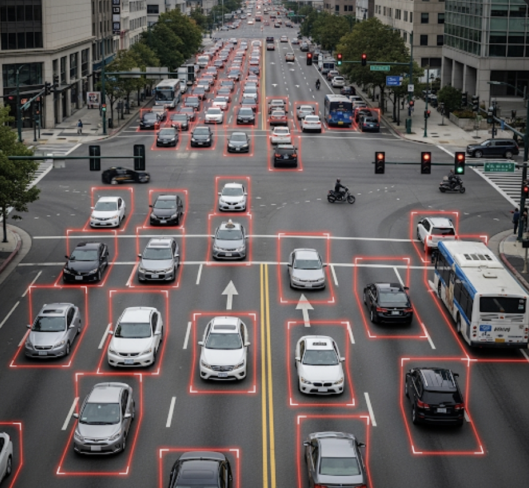
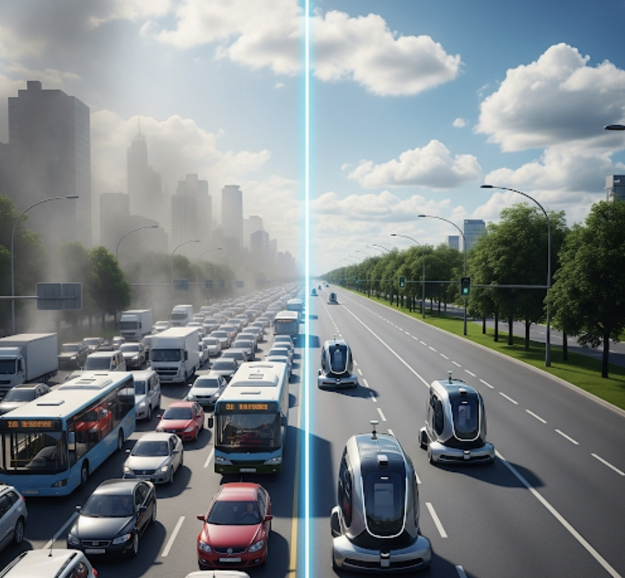

UrbanPulse
Sign in to access the future of traffic management.
Sign in to access the future of traffic management.
UrbanPulse leverages real-time video analysis and AI to create a dynamic, responsive, and efficient traffic management system. Reduce congestion, lower emissions, and make city travel smarter for everyone.
Our system analyzes live video feeds to count vehicles, identify traffic density, and intelligently allocate green light durations, optimizing flow at intersections in real-time.

Up to 30%
20% Faster
15% Lower
This section demonstrates the immediate impact of UrbanPulse on traffic flow, transforming congestion into clarity.

Optimize daily commuter traffic and reduce bottlenecks.
Manage traffic flow around stadiums and event venues.
Create clear paths for ambulances and fire trucks.
Regulate on-ramp flow to maintain highway speed.
UrbanPulse is built on a foundation of cutting-edge computer vision and robust backend logic, allowing for intelligent, real-time decision-making.
Using "OpenCV" and the "YOLOv8" model, our system 'sees' and identifies every vehicle with incredible speed and accuracy.
With a "Python" and "Flask" backend, the system processes visual data, calculates traffic density, and makes smart decisions in milliseconds.
"UrbanPulse is a game-changer. The ability to adapt to traffic in real-time has led to a noticeable reduction in congestion and has made our city's transport network significantly more efficient."